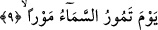
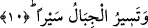
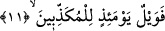

9. O gün gök, bir çalkanış çalkalanır.
urada kasdedilen, Allah’ın azabının hiç bir vakit önlenemeyecek olmasıdır.
Mevr; çalkalanmak, gelmekle gitmek arasında tereddüd etmek ve hızlı hareket etmek
gibi mânâlar taşır. Yâni o gün gök çalkalanır, gelip gider. Bir çalkantı gelir ve o an gök
yırtılır, yarılır.
Bildirildiğine göre o gün semâ değirmen gibi dönecek ve içindekilerini, gemide
bulunan kimselerin dalgalar karşısında çalkalanması gibi, çalkalayacaktır. Bir başka
rivâyete göre de bu âyetin tefsiri şu şekildedir: Semânın cüzleri birbirine karışır,
içindekiler birbirine katılır, melekler de korkudan dolayı bir kargaşa yaşarlar.
10. Dağlar bir yürüyüş yürür ki!...
Yâni yerin zemininden kayıp toz duman olur. Bazıları, dağların yürümesinin bulutların
yürümesi gibi olacağını söylerler. Bu yürüyüş esnasında dağlar yarılır ve sonunda o
günün dehşetinden didilip atılmış renkli yüne benzerler. Celâlin tecellîsi sırasında
fenâya eren sâlikin durumu bunun gibidir. Zira bu esnada sâlikten hiçbir eser kalmaz.
“Mahiyeti idrak edilemeyecek olan acâib bir çalkalanış ve mahiyeti idrak edilemeyecek
olan eşsiz bir yürüyüş”.
11. Yalanlayanların vay hâline o gün!
Âyetin başındaki “fâ” harfi fasîhadır. Cümle gizli bir şart cümlesinin cevabıdır.
Takdir şöyledir: Bu çalkalanış ve yürüyüş vukû bulduğunda ve iş bu zikredilen tarzda
geliştiğinde, başlarına gelecek bu şiddetli azaptan dolayı o yalanlayanların çekecekleri
var!
Bu âyet, dîni yalanlamayan büyük günah sâhibi mü’minlerin de bu azâba dûçar
olacağını ihtivâ etmez. Çünkü şiddetli azap mânâsını taşıyan “veyl” kelimesi, âsi
mü’minler için değil özellikle Allah’ı, Rasûlullah’ı ve âhireti yalanlayanlara
müteveccihtir.